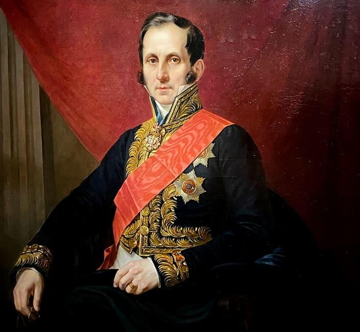

“Orthodoxy, Autocracy, and Nationality” (Pravoslavie, Samoderzhavie, Narodnost') can be understood as Russia's conservative, imperial response to the political ideals of the French Revolution: Liberty, Equality, Fraternity (the ideas of the modern nation (see Anderson's discussion of the nation as the imaginary community).
Orthodoxy – Autocracy – Nationality
Orthodoxy: The Russian Orthodox Church as the spiritual foundation of society and the legitimacy of the state.
Autocracy: The emperor as the supreme source of traditional political authority, rejecting legal-rational legimimacy of constitutionalism and popular sovereignty.
Nationality (Narodnost'): A distinctive Russian national character, rooted in historical traditions, loyalty, and the relationship between the people and the tsar.
Historical significance for Russia and Eastern Europe
Uvarov's formula was particularly significant because it helped establish the ideological foundations of Nicholas I's reign (1825–1855), following the Decembrist Revolt of 1825.
It also illustrates a broader nineteenth-century conflict between liberalism, nationalism, and conservatism.
The Russian Empire was trying to modernize and strengthen itself while resisting the revolutionary political transformations taking place in Europe.
This contradiction would continue to shape Russian history:
1848: Revolutions across Europe reinforced Russian fears of liberalism and nationalism.
1861: Alexander II abolished serfdom, demonstrating that substantial social modernization could occur under autocratic rule.
-
Late nineteenth century: Russian nationalism increasingly became intertwined with imperial expansion and Russification.
1917: The imperial political and ideological system ultimately collapsed under the pressures of war and revolution.